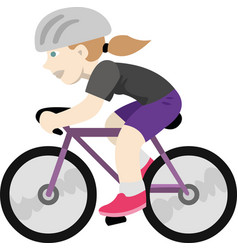

Best Cardio Exercises to Boost Your Fitness
Cardio workouts are not just about burning calories – they improve your heart health, stamina, and overall energy levels. Whether your goal is weight loss, fat burning, or building endurance, cardio exercises should be part of your daily routine.
Why Cardio Matters?
- Increases your heart rate and improves blood circulation.
- Helps in quick weight loss and fat burning.
- Strengthens lungs and boosts stamina.
- Reduces risk of heart disease and diabetes.
- Releases stress and improves mood naturally.
- Just 20–25 minutes daily is enough to see results.
Top 5 Effective Cardio Exercises
-
Running
One of the simplest and most effective exercises. Running helps burn fat fast, improves lung capacity, and strengthens your legs.
-
Cycling
Great for lower body strength and stamina. Cycling outdoors or on a stationary bike boosts cardiovascular fitness.
 -
Dancing
A fun way to stay fit! Dancing combines cardio with body movement, making exercise enjoyable while burning calories.
-
Jump Rope
Skipping rope is one of the best calorie-burning exercises. Just 10 minutes equals the benefits of 30 minutes of jogging.

-
Sports
Games like football, basketball, or badminton keep you active while also building coordination and endurance.

💡 Want a personalized workout plan? Use our Fitness Calculators or check out our Diet Plan for faster results!
Read More
For detailed step-by-step guides on these exercises, visit our Fitness Blog where we share expert tips and routines.